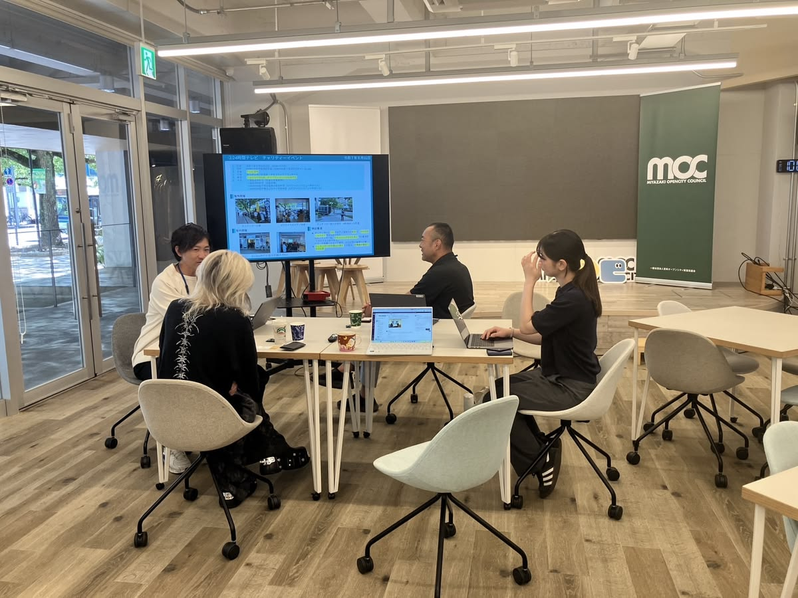

Pahami Kebutuhan
Membahas ide, tujuan penelitian, dan permasalahan yang ingin diselesaikan melalui website.
N2E Dev berfokus pada pengembangan website untuk kebutuhan tugas akhir mahasiswa. Kami membantu menerjemahkan ide dan kebutuhan penelitian menjadi rancangan website dengan fitur yang disesuaikan dengan ruang lingkup proyek.
Lihat Layanan ↗Setiap tugas akhir memiliki permasalahan, tujuan, dan kebutuhan sistem yang berbeda. Karena itu, pengembangan website perlu dimulai dengan memahami ide proyek dan fitur yang benar-benar dibutuhkan.
N2E Dev berfokus pada website seperti sistem informasi, pengelolaan database, pemesanan, inventaris, serta dashboard dan laporan. Setiap proyek dibahas terlebih dahulu agar ruang lingkup pekerjaan lebih jelas.
Membantu mahasiswa mengembangkan website sesuai kebutuhan sistem dan ruang lingkup tugas akhir.
Lihat Layanan ↗
N2E DEV · WORKSPACEN2E Dev berfokus pada pengembangan website untuk tugas akhir mahasiswa, dengan proses yang dimulai dari memahami kebutuhan proyek hingga menentukan fitur yang sesuai.
Membahas ide, tujuan penelitian, dan permasalahan yang ingin diselesaikan melalui website.
Menyesuaikan fitur dan cakupan sistem dengan kebutuhan proyek yang disepakati.
Mengerjakan website berdasarkan rancangan dan ruang lingkup yang telah dibahas.
Mulai diskusi mengenai kebutuhan website untuk tugas akhirmu.
Konsultasi Sekarang ↗